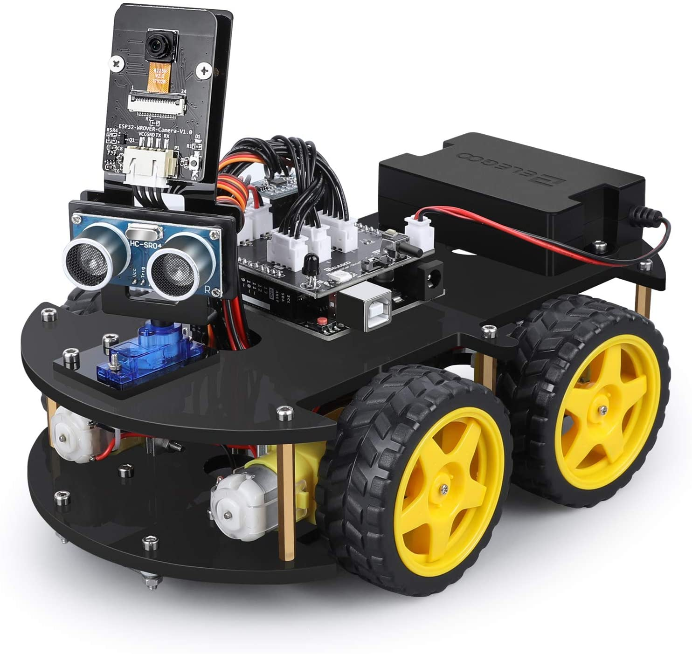
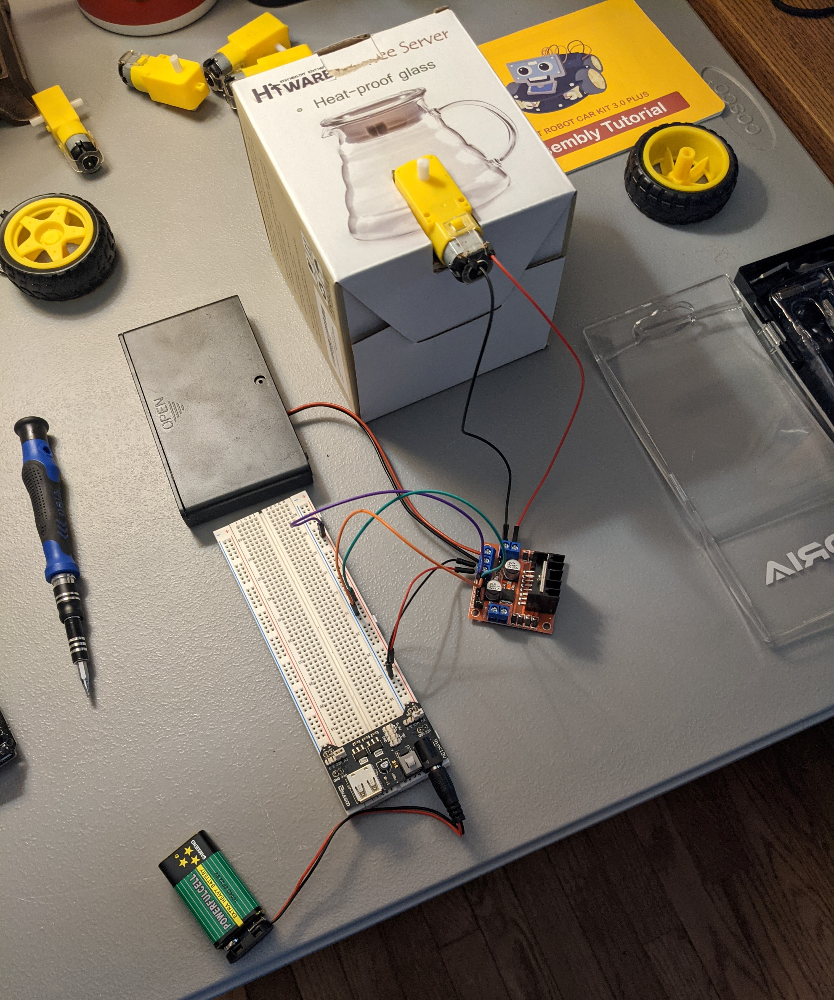
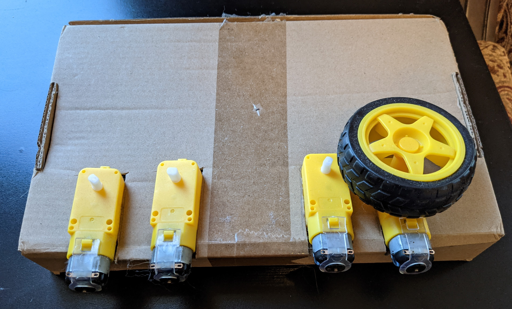
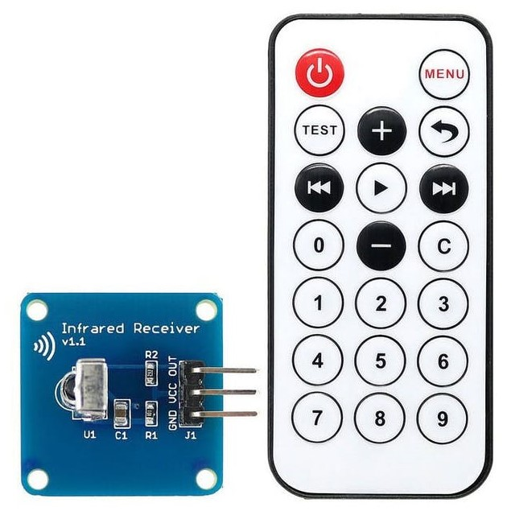

Robotic Car

For this project, I was interested in building my own robotic car. My goal was to be able to control it with an infrared remote. I was able
to base the foundation of the car off the "ELEGOO UNO Robotic Car Kit", pictured left. I wanted to continue building on my basic knowledge
of manipulating a microcontroller like an Arduino Uno. This would also expand my knowledge relating to sending/receiving signals. I
wanted to get some more hands-on experience with robots. Albeit quite basic experience, I think this project achieved that.
Project Details
Step 1: How do you control a simple DC motor?

First, I had to learn how to control a single motor that would drive a wheel. This required a quick review of sending HIGH and LOW signals
through a microcontroller in order to power the motor in different ways. I ended up not using the Arduino Uno in this step in order to strictly
test the motor initially. Flipping on the battery box would turn the motor on. This process also utilized an H-bridge which allowed me to
switch the rotation direction of the motor depending on which voltages are HIGH and LOW. Pictured to the right is a low-fidelity prototype
setup to test the rotation of a single motor. In this step I also learned I needed to power the H-bridge separately. The HIGH and LOW input
voltages to the H-bridge would be controlled by the Arduino in the future
Step 2: How do you control 4 DC motors?

After the previous step, upgrading to 4 motors was not that challenging. This is where I began working on the Arduino logic. I coded in
functions that changes which direction the wheels are spinning for different scenarios. This meant I needed a function for turning the car
each direction, as well as going forward or backward. I also had another challenge when learning how to control all 4 motors with a single
H-bridge. Pictured left is another test setup to ensure the wheels were turning in the correct direction (wires not attached for clarity)

Step 3: How do you send signals to the car?
In this next step, I experimented with an infrared remote and receiver, similar to the one pictured right. This required me to look up
the pin functions for the receiver and figure out how to connect it to the Arduino. It also required a lot of troubleshooting as not
all IR signal codes are the same across devices. I would print the current signal being sent to the receiver and use this signal code to change
the motor rotations accordingly.
Takeaways
Ultimately, I learned much about the process of working with Arduino code and the logic involved in controlling motors based on commands received. In this case, the "commands" correspond to the IR signal codes sent from the wireless remote. Below are some core takeaways I internalized thanks to this project. I didn't end up adding some extra sensors the ELEGOO car had, such as a distance sensor, but I still improved my technical skills regardless.
- Basic Arduino library code
- How an H-bridge works and how to use it to control motors
- How an IR receiver works and how to use it to change the motor outputs
- More experience with breadboards outside of class
- How to rapidly prototype setups that affect the design process